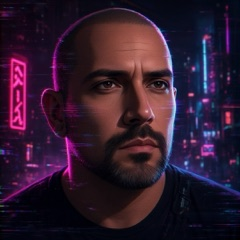
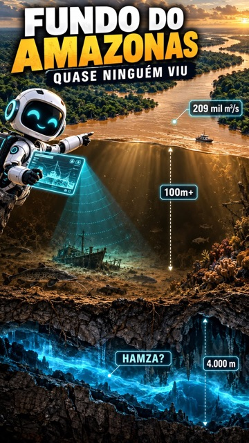
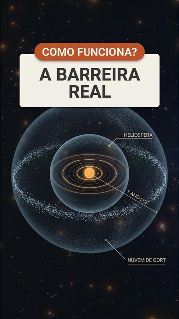

ovictorlab
Perguntas que todo mundo já fez, respondidas com fonte. Ciência, engenharia e IA.
Os mais vistos

O fundo do Amazonas
Dá pra sair do sistema solar? Por que lutavam em fila?
Perguntas que todo mundo já fez, respondidas com fonte. Ciência, engenharia e IA.

O fundo do Amazonas
Dá pra sair do sistema solar? Por que lutavam em fila?